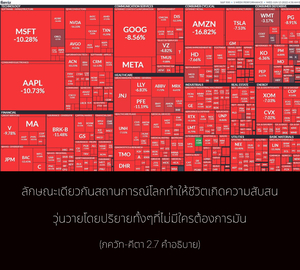

บัดนี้ข้าพเจ้ารู้สึกสับสนเกี่ยวกับหน้าที่ และสูญเสียความสงบจนหมดสิ้น อันเนื่องมาจากความอ่อนแอเล็กน้อย ในสภาวะเช่นนี้ข้าพเจ้าขอเรียนถาม ได้ทรงโปรดกรุณาตรัสอย่างชัดเจนด้วยว่า อะไรคือสิ่งที่ดีที่สุดสำหรับข้า บัดนี้ ข้าพเจ้าขอนอบน้อมเป็นสาวก วิญญาณดวงนี้ขอศิโรราบแด่พระองค์ ทรงโปรดกรุณาชี้ทาง



โดยวิถีทางของธรรมชาติ ระบบทั้งหมดของกิจกรรมทางวัตถุเป็นต้นเหตุแห่งความสับสนวุ่นวายสำหรับทุกคน ความสับสนวุ่นวายมีอยู่ในทุกฝีก้าว ดังนั้น จึงจำเป็นอย่างยิ่งที่เราต้องเข้าพบพระอาจารย์ทิพย์ผู้เชื่อถือได้ ซึ่งสามารถให้คำแนะนำที่เหมาะสมเพื่อนำไปปฏิบัติให้บรรลุถึงจุดมุ่งหมายแห่งชีวิต วรรณกรรมพระเวททั้งหมดแนะนำเราให้เราเข้าพบพระอาจารย์ทิพย์ผู้เชื่อถือได้เพื่อให้เป็นอิสระจากความสับสนวุ่นวายแห่งชีวิต ซึ่งเกิดขึ้นโดยที่เราไม่ปรารถนา เสมือนดั่งไฟป่าที่ลุกไหม้ขึ้นมาโดยไม่มีใครจุด ลักษณะเดียวกันสถานการณ์โลกทำให้ชีวิตเกิดความสับสนวุ่นวายโดยปริยายทั้งๆที่ไม่มีใครต้องการมัน ไม่มีใครต้องการให้ไฟไหม้แต่ไฟก็ไหม้ และทำให้เราสับสนวุ่นวาย ปรัชญาพระเวทแนะนำว่าในการแก้ปัญหาเกี่ยวกับความสับสนวุ่นวายแห่งชีวิต และเข้าใจถึงศาสตร์แห่งการแก้ปัญหานั้น เราจะต้องเข้าพบพระอาจารย์ทิพย์ผู้ที่อยู่ในสาย ปรมฺปรา บุคคลผู้มีพระอาจารย์ทิพย์ที่เชื่อถือได้จะรู้แจ้งในทุกสิ่งทุกอย่าง ดังนั้น เราไม่ควรอยู่ในความสับสนวุ่นวายทางวัตถุ แต่ควรเข้าพบพระอาจารย์ และนี่คือคำอธิบายของโศลกนี้
แล้วใครคือบุคคลผู้อยู่ในความสับสนวุ่นวายทางวัตถุ บุคคลนั้นก็คือ ผู้ที่ไม่เข้าใจปัญหาของชีวิต ใน พฺฤหทฺ-อารณฺยก อุปนิษทฺ (3.8.10) ได้อธิบายเกี่ยวกับผู้ที่มีความสับสนไว้ดังนี้ โย วา เอตทฺ อกฺษรํ คารฺคฺยฺ อวิทิตฺวาสฺมาฬฺ โลกาตฺ ไปฺรติ ส กฺฤปณห์ “บุคคลผู้มีความโลภไม่แก้ปัญหาชีวิตแม้เกิดมาเป็นมนุษย์ และจากโลกนี้ไปก็เป็นเหมือนแมวและสุนัข โดยไม่เข้าใจศาสตร์ความรู้แจ้งแห่งตน” ร่างมนุษย์มีคุณค่าสูงสุดสำหรับสิ่งมีชีวิตในการที่จะใช้มันเพื่อแก้ปัญหาชีวิต ฉะนั้น ผู้ที่ไม่ใช้โอกาสนี้อย่างเหมาะสมเป็นคนที่โง่เขลา ในทางกลับกัน มี พฺราหฺมณ หรือผู้ที่ฉลาดพอที่จะใช้ร่างกายนี้แก้ปัญหาชีวิตทั้งหมด ย เอตทฺ อกฺษรํ คารฺคิ วิทิตฺวาสฺมาลฺ โลกาตฺ ไปฺรติ ส พฺราหฺมณห์
กฺฤปณ หรือคนโลภ เสียเวลากับความเสน่หาต่อครอบครัว สังคม และประเทศ ฯลฯ มากเกินไป ตามแนวคิดชีวิตแห่งโลกวัตถุ ส่วนมากจะยึดติดอยู่กับชีวิตครอบครัว เช่น ภรรยา บุตร ธิดา และสมาชิกคนอื่น โดยอาศัยหลักของ “โรคผิวหนัง” กฺฤปณ คิดว่าตัวเขาเองสามารถปกป้องสมาชิกในครอบครัวให้พ้นจากความตายได้ หรือมิเช่นนั้น กฺฤปณ ก็จะคิดว่าครอบครัวหรือสังคมสามารถช่วยเขาให้หลุดพ้นจากเงื้อมมือของพญามัจจุราชได้ ความยึดติดกับครอบครัวเช่นนี้พบได้เช่นกันแม้ในสัตว์ชั้นต่ำที่ดูแลลูกของมัน ด้วยความมีสติปัญญา อรฺชุน ทรงเข้าใจว่าความเสน่หาในการยึดติดต่อสมาชิกในครอบครัว และความปรารถนาที่จะปกป้องพวกเขาจากความตายนั้นเป็นต้นเหตุแห่งความสับสนวุ่นวาย ถึงแม้ อรฺชุน ทรงทราบดีว่าหน้าที่ในการรบรอคอยพระองค์อยู่ แต่เนื่องมาจากความอ่อนแอเพียงเล็กน้อยทำให้ไม่สามารถปฏิบัติตามหน้าที่ได้ ฉะนั้น อรฺชุน ทรงตรัสถามองค์กฺฤษฺณผู้ทรงเป็นพระอาจารย์ทิพย์สูงสุดเพื่อให้ได้คำตอบที่แน่นอน อรฺชุน ทรงถวายชีวิตแด่องค์กฺฤษฺณด้วยการมาเป็นสาวก พระองค์ทรงปรารถนาที่จะหยุดการสนทนาฉันมิตร การสนทนาระหว่างพระอาจารย์และสาวกจึงเริ่มขึ้นอย่างจริงจัง บัดนี้ อรฺชุน ทรงปรารถนาที่จะสนทนาอย่างจริงจังต่อหน้าพระพักตร์ของผู้ที่พระองค์ทรงยอมรับว่าเป็นพระอาจารย์ทิพย์ ดังนั้น องค์กฺฤษฺณทรงเป็นพระอาจารย์ทิพย์องค์แรกแห่งศาสตร์ภควัท-คีตา และ อรฺชุน ทรงเป็นสาวกรูปแรกที่เข้าใจ ภควัท-คีตา อรฺชุน ทรงเข้าใจภควัท-คีตา อย่างไรนั้นได้กล่าวไว้ในตัวของ คีตา นี้เอง ถึงกระนั้นก็ยังมีนักวิชาการทางโลกผู้เบาปัญญาอธิบายว่า เราไม่จำเป็นต้องยอมจำนนต่อองค์กฺฤษฺณในฐานะที่ทรงเป็นบุคคล แต่ยอมจำนนต่อ “ผู้ที่ยังไม่เกิดภายในองค์กฺฤษฺณ” ไม่มีข้อแตกต่างระหว่างภายในและภายนอกขององค์กฺฤษฺณ ผู้ที่ไม่สามารถเข้าใจเช่นนี้เป็นบุคคลโง่เขลาเบาปัญญาที่สุดที่พยายามที่จะเข้าใจ ภควัท-คีตา